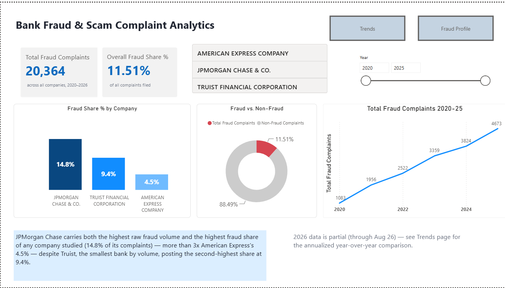
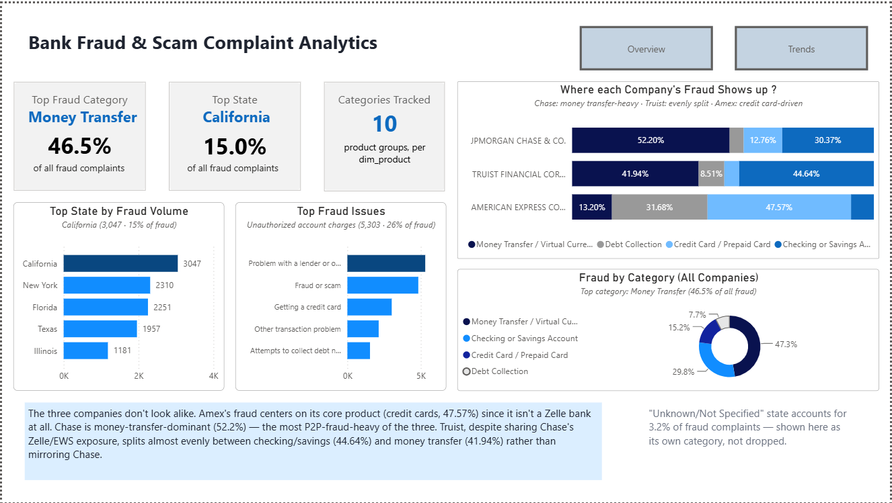
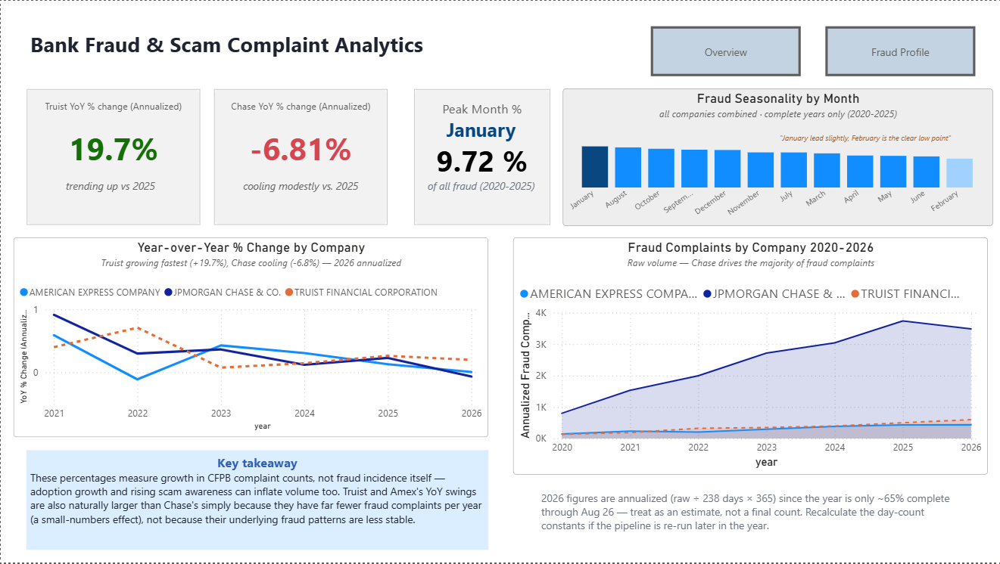
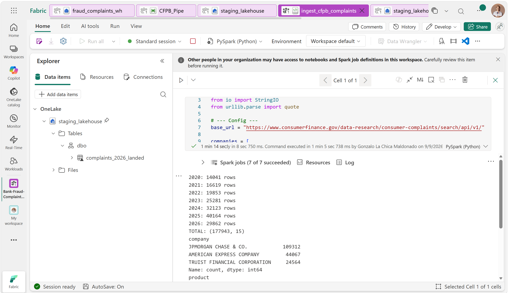

An end-to-end pipeline on Microsoft Fabric: a Python notebook pulls CFPB's public complaint data year by year, a T-SQL warehouse cleans and models it into a star schema, and Power BI sits on top with a 13-measure DAX layer — built to answer one question CFPB doesn't answer for you: which of these banks actually carries more fraud, and where does it show up.
This one started after touring Truist's Cyber Fusion Center in Atlanta and reading how much peer-to-peer payment fraud — Zelle scams especially — has become one of the biggest live concerns in banking through 2025–2026. I wanted to see what the actual numbers looked like, and specifically how Truist compared to the other side of that Zelle exposure.
Truist and JPMorgan Chase both co-own Early Warning Services, the company that operates Zelle, which puts both banks directly on the hook for P2P fraud. American Express isn't a Zelle bank at all, but it faces the same fraud/dispute-handling pressure on its own payment products — a useful point of contrast rather than just another data point. Instead of a generic complaint-volume dashboard, I narrowed in specifically on fraud- and scam-related complaints in the public CFPB Consumer Complaint Database.
A small end-to-end pipeline built on Microsoft Fabric: a Python notebook pulls CFPB's Complaint Search API one calendar year at a time, a Fabric Data Warehouse (T-SQL) cleans and models the result into a star schema, and Power BI sits on top with Direct Lake on SQL and a 13-measure DAX layer across three report pages.
requests + pandas), pulling year-by-year to stay under the API's result-size capfact_complaints + dim_company / dim_date / dim_product / dim_issue / dim_geography
Chase alone has over 100K complaints in scope — enough to hit CFPB's API result-size
limit when requested in a single call. The notebook pulls year by year instead (2020–2026),
with a browser-style User-Agent header, since CFPB's default request identity gets
a 403 from its anti-bot protection. consumer_complaint_narrative is dropped before
anything reaches the lakehouse — out of scope by design (see block 01), and also the
single riskiest field for parsing corruption during early ingestion attempts.
headers = { "User-Agent": "Mozilla/5.0 (Windows NT 10.0; Win64; x64) AppleWebKit/537.36 " "(KHTML, like Gecko) Chrome/122.0.0.0 Safari/537.36", "Accept": "text/csv,*/*", } frames = [] for year in range(2020, 2027): date_min = f"{year}-01-01" date_max = f"{year}-12-31" query = "format=csv&" + "&".join(f"company={enc(c)}" for c in companies) query += f"&date_received_min={date_min}&date_received_max={date_max}" url = base_url + "?" + query # year-chunked, not one giant call -- Chase's volume alone hits the API's result cap resp = requests.get(url, headers=headers, timeout=120) year_df = pd.read_csv(StringIO(resp.text)) frames.append(year_df)
Fraud complaints don't live in one clean CFPB category. The direct "Money transfer,
virtual currency, or money service" product only covers about 46.5% of them —
the rest are scattered across checking/savings accounts, credit cards, and elsewhere.
A first pass at solving this with keyword matching (LIKE '%fraud%', %scam%,
%identity theft%) looked reasonable and was wrong: it caught billing complaints about
a "credit monitoring / identity theft protection" subscription service — nothing to
do with actual identity theft — purely because the category label contained the phrase.
-- fraud flag = direct P2P/money-transfer product, OR an explicit, -- manually-reviewed allow-list of issue/sub-issue pairs (11 of 275) CASE WHEN product = 'Money transfer, virtual currency, or money service' THEN 1 WHEN (issue, sub_issue) IN (-- allow-listed pairs, reviewed by hand ('Fraud or scam', NULL), ('Managing an account', 'Unauthorized transactions or other transaction problem') -- ...9 more pairs, see dim_issue ) THEN 1 ELSE 0 END AS is_fraud_complaint
Product = "Money transfer..." alone. The allow-list replaced
keyword matching entirely once the false positives above turned up.
Truist and Chase share identical Zelle/EWS ownership, so the easy assumption is that their fraud profiles look the same. Breaking fraud down by product category per company, with a partitioned window function so each company's percentages total to 100% independently, says otherwise:
SELECT c.company_name, p.product_group, COUNT(*) AS fraud_complaints, CAST(COUNT(*) AS DECIMAL(10,4)) / SUM(COUNT(*)) OVER (PARTITION BY c.company_name) * 100 AS pct_of_company_fraud FROM fact_complaints f JOIN dim_company c ON f.company_key = c.company_key JOIN dim_product p ON f.product_key = p.product_key WHERE f.is_fraud_complaint = 1 GROUP BY c.company_name, p.product_group ORDER BY c.company_name, fraud_complaints DESC;
Chase is money-transfer-dominant, the most P2P-fraud-heavy of the three. Amex's fraud centers on its own core product since it isn't a Zelle bank at all. Truist — despite sharing Chase's exact Zelle/EWS exposure — splits almost evenly between checking/savings and money transfer instead of mirroring Chase.
14.8% of Chase's total complaints are fraud-related — more than 3× American Express's 4.5%.
Truist is the smallest of the three by volume but posts the second-highest fraud share at 9.4%.
2026 YoY (annualized for the partial year): Truist +19.7%, Chase -6.8%, Amex essentially flat at +0.6%. This measures complaint counts, not fraud incidence — rising Zelle adoption and awareness can inflate volume on its own.
January is a slight peak (9.7% of all fraud complaints, 2020–2025), February the clear low (6.8%). No tax-season or holiday spike showed up.
California, New York, Florida, and Texas together account for roughly half of all fraud complaints — unsurprising, but worth confirming rather than assuming.
11 of 275 distinct issue/sub-issue pairs are hand-reviewed and flagged as fraud — replacing a keyword search that swept in unrelated billing complaints.
The star schema and DAX layer feed a 3-page Power BI report: an Overview with headline KPIs and fraud share by company; a Fraud Profile breaking down where each company's fraud actually lands by category, state, and issue; and a Trends page with annualized year-over-year change and seasonality by month.



.pbix backup stand in for both for now. Full code (17 SQL scripts, the ingestion
notebook, and the .pbix) will be linked here once bank-fraud-complaint-analytics
is pushed to GitHub.
Code in a repo is easy to claim and easy to skim past. Here's the ingestion notebook actually executing in Fabric — 7 of 7 Spark jobs succeeded, year-by-year row counts, and the company breakdown printing out:

fact_complaints + company/date/product/issue/geography) and built 17 validated T-SQL analysis queries on top of it.